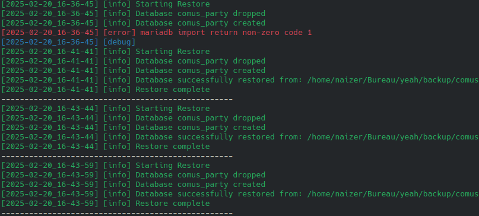
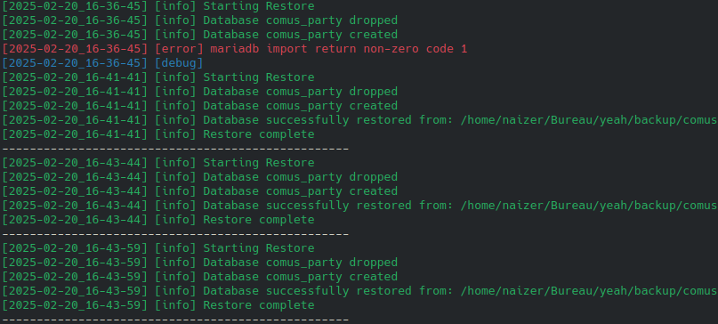

Auto-recorder is a bash script taking a screenshot with flameshot and a photo with ffmpeg every 15 seconds and send them via mail. It was done as a counter measure if the host computer gets stolen. Additionally, it sends the IP address, geolocation and wifi SSID.


db-backup.sh was made to be ran with a cron job to backup a mariadb database using maridb-dump as well as zipping the backup. db-restore.sh was created to restore a backup of a mariadb database using. Both the processes are logged.
 


dl-yt-playlist.py is a short python script requesting the playlist URL and downloading each video in the playlist the user gives as a parameter. It used Youtube Data API v3.
I like to keep my files organized but generally end up having a lot of folders, which is why I decided to create this script. tp.sh is a bash script which opens the explorer after the user called the script with pre-defined parameters in the terminal.
clean-downloads.py is a python script I made to move files from my Downloads folder to another folder. I prefer to keep some types of files only in my Downloads folder to archive what I download while I tend to delete others, which is why I decided to create this script.

getAllFilesStats.ps1 is a powershell script I made to complete cleanDownloads.py. As I mostly keep installers in my Downloads folder, it tends to get quite large, so to avoid wasting space but still archive them, I created this script which gets all the files' metadata in my Downloads folder and writes them in a text file.